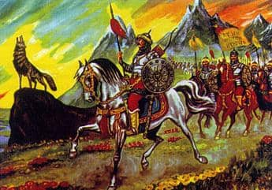

Damat olarak geldiği ilk gün çadırdaki Manas’ın yanına Atemir’in adamları çekinip giremedi. İkinci gün de Manas’la kimse ilgilenmedi. Savaşçı sinirlenmeye başladı. Ak-kulasını çekti yanına Acıbay’ı alıp arzuladığı kızı görmeye gitmek istiyordu. Atemir’in kızının aklındakini öğrenmeye, güzelliğini görmeye niyetlendi. Manas, Acıbay’la beraber kaleye bir çaresini bulup girdi. Hanın gölünü dolaşıp Altın saraydaki Melike kızın karargahına geldi.
Acıbay kapıya bakan yedi kadın cariyeyi parayla kandırıp, Manas’ı odaya soktu. Manas, kadınların böyle zarifini görmemişti. Sanirabiyga tam buluğ çağında idi. Sanirabiyga’ya Manas dikilip baktı. Manas’ın kalbi küt küt çarpıp vücudunu titretiyordu.
Sanırabiyga Manas’tan ürküp perdesini çekti. Lambayı alarak yabancı adamın yüzüne baktı ki, iki gözü ateş gibi yanıyor, karşısında değişik yüzlü, dağ gibi kocaman, heybetli bir kişi duruyordu. Manas kızın eline engellerken fırlayan hançer bileğini çizip geçti. Sinirlenen Manas Sanırabiyga’yı itti. Sanırabiyga’nın dikkati dağılıp, gözlerinden yaş dökülüp “Başıma geleni görürüm” diye direnip ses çıkarmadı. Manas başka bir şey söylemeden han karargahından çıkıp askerlerinin yanına geldi.
Manas, ordusundaki davulları aniden çaldırdı. Kalenin iki başına savaşa çağıran davul sesi hemen ulaştı. Davulun ardı ardına çalındığını duyduğunda dünürlüğe gelen Kırgızlar şehir civarındaki Manas’ın ordusuna dalga dalga yığıldılar. Kalabalık ordu atlandı. Yaylara ok yerleştirildi. Mızraklar uzatılıp savaşa hazırlanılarak şehre gözdağı verildi.
Cakıp Bay ile Kökötöy savaşçıların önünü engellediler.”Dünüre iyi niyetle gelip, kız yerine karargahını basmak hangi atanın adetinde vardır? Durun! Atlarınızı geri çevirin!” Cakıp Bay Manas’a söz dinletemeyip çoralarına bağırdı.
Manas yalnız bırakıldı. Atemir koşuşturmaktan belalı Manas’ı unutmuştu. İki gün, iki gece kimseyi göremeyen savaşçı Manas aklını oynatacak gibi oldu, yalnız kaldı. Yanında ne kırk yiğidi var, ne de gönlünü açacak kızlar var. Manas savaşmaya düşman arayıp dururken dışarıda kırk çorasının başı Kırgıl gözüktü. Manas ona eziyet etti, Kırgılı söze getiremeyen Er Manas, onu kaldırıp yere vurdu. Bu esnada Serek Çora girmişti, ona da bağırdı.
Atemir’in üzüldüğünü duyan, pak Sanırabiyga kız babasının yüzüne baktı. Zarif, Sanırabiyga hem cinslerinden daha çekici idi: kurumuş dallara bakarsa hemen yeşerirdi, kanadı. Kurumuş kelebeklere dokunursa kelebekler dirilirdi. Sanırabiyga kuşunki gibi sesleriyle kız olduğu halde babasına akıl verirdi.

Kırgızların önderi Manas.
Kız Sanirabiyga, kırk kızı yanına alarak ay yüzüyle göz kamaştırarak yola koyuldu. Beyaz bayrağı ve dizili kızları gören, ordunun önünde yürüyen kulağı delik, gözü keskin Bakay “Durun”, işareti verdikten sonra sallana sallana gelmekte olan askerler atlarını geri çektiler. Bu sırada ordunun önüne Manas geldi. Sanırabiyga kızın akıllıca söylediği söz ilaç gibi geldi, Savaşçı Manas’ın buz gibi olan yüreği eriyip, sakinleşti kıza bir şey söylemeden durakaldı.
Yağmaya gelen askerlerin önünde Abılkasım beğ şöyle duyurdu:
“Millet! Yol verin, dünürler geliyorlar. Kara Kırgız’ın hanı Manas, Atemir hanın kızı Sanırabiyga’nın ziyaretine geliyor. Adet gereğince Sanırabiyga’yı üç gün sonra göndereceğiz! Düğüne davet ediyoruz. Atemir Han, Tacik halkının adetleriyle kızını kocaya vermek istedi. Hazinesini açtırdı. Kızın ve damadın önüne Kırgızların getirdiği üç yüz deveye yüklenen kızıl altın sadaka olarak saçıldı. Atemir yüz bin altını da Allah rızası için saçtı. Atemir han Manas için ev diktirdi. Nikah hutbesi okutup kız ile damadı eve bıraktı. Savaşçı Manas alacağı kızı, yatacağı evi buldu. Usta olan Serek eğlenceyi başlattı. Atemir Sanırabiyga kızının kırk hizmetçisini Manas’ın kırk çorasına vermek istedi.
Almambet’in Sarala atı Aruuke’nin evine geldi. Almambet boz eve girdi, gördü ki, çirkin, zenci gibi perişan bir kara kız oturuyordu. “Eyvah, şanssızlığıma bak, söz birdir, adeti bozmayayım” Almambet gönlünde böyle düşündükten sonra endişeyle evde otura kaldı. Baktı ki, Aruuke dua bilen, büyücü bir kız imiş, Almambet’i denemek için görünüşünü değiştirmişti. Savaşçı Bakay miskin ama güzel kız Naarkül’ün evine Kökçoloğunu bağladı. Kılavuz Sırgık kökkazığını koşturup, Siyagül’ün evine ulaştı. Acıbay Karala atını Ulugat kızın evine çevirdi. Çubak Seyilkan kızın evine yerleşti. Serek Narkızıl atını Talapbübü evine çevirdi. Kırk dördüncü olarak Ak-kula atıyla sallana sallana Manas geldi. Manas beyaz saraya ulaşınca önüne Sanırabiyga çıktı.
Ertesi gün düğün başladı. Düğünden memnun olmayan sadece Almambet idi, “Belalı kara kız nereden çıktı karşıma. Başkalarına güzel kızlar düştü” diye gönlü soğuyup kıza sırt çevirdi. Aruuke’nin sırrını Sanırabıyga biliyordu. Kızı yanına çağırıp kulağına fısıldadı: “Aruuke, Almambet hanı mahcup etme, Hakanın gözde adamıdır. Ona var. O savaşçı Manas’tan eksik değil, yoksa Almambet beni alsın!”
Almambet söze uyarak Aruuke’ye gitti. Gidip gördü ki Almambet gözlerine inanamadı. Kara kıv evvelkinden de kararıp kazan kurumu gibi olmuştu. Almambet toza bulanmış yüzü buz kesilen kızın yanında durmaya dayanamadı. Tekrar Manas’ın yanına vardı.
“ Manas, o kara kız ışıktan yaratılmışsa da kadınlığa almayacağım. Atım kazandı diye o kızı alırsam mutsuz olacağım. Almambet ellerini silkerek atına binmeye kalktı. Sanırabiyga kız bir boyunca uyumadan Aruuken ile konuşmasına rağmen ona söz geçiremedi. Manas çok kızdı. Manas ile Almambet’in öfkelendiğini öğrenen Akbalta ve ihtiyarlar çadıra geldiler. Manas’ı araya alarak teskin etmeye çalıştılar. Atemir Han Sanırabiyga kızın hizmetçileriyle bir süre konuştu. Aruuke çok akıllı bir kız idi, söz dinlerdi.
Aruuke dikelen evine girip efsun okuyup eski güzel kız haline dönüşmüştü. Şimdi Aruuke’nin güzelliğine yalnız Almambet değil, onu görenler bayıldılar. Almambet ile mutsuz Aruuke yan yana durdukları zaman düğünün tadı çıkmaya başladı. Taciklerin dansı oynandı, şarkısı söylendi. Manas’ın idaresindeki kırk üç çoraya nikah kıyıldı.
Büyük dünür Çıyırdı Hanım Atemir han ile hatununa döndü. Narin belli, akıllı, tatlı sözlü Kanikey şimdi Kırgız ihtiyarlarına hürmet gösterdi. İhtiyarlar yeni gelin için hayır dua ettiler. Kanikey’in akıllılığı Tacikler ile Kırgızlar arasında duyuldu. Çeyiz sadece kendi başına değil, hizmetçisi olan kırk kıza da yetti.
Manas ile Kanikey’in düğünü kırk gün sürdü. Böylece renge renk katıldı, her şey mükemmel gitti. Almambet’in darılarak Manas’a geldiğinden midir nedir? Aydarkan’ın oğlu Kökçö uzun süredir ne haberleşti, ne de mektuplaştı. Manas üzüldüğünü belli etmeden içinde sakladı. “Günah Kökçödedir, ordusuna dokunmadım, ya otlağını zapt etmedim yahut kahramanlarını öldürmedin, niye darılsın ki. Başına iş geldiği gün gelir” diye içinden üzülüyordu.
Derken bir gün karargaha Kökçö’den haber geldi. “ Manas, sözüme şahit, Er Kökçö’nün mührü işte bu, yazdığı mektup da budur” dedi haberci. Savaşçı Kökçö mektubunda: “Altay’daki Kalmuklar yer kapmak için Kazakları kovuyorlar. Manas yardıma gel” diye yazmıştı.
Manas Kökçö’nün yardım istediği için memnun oldu, Manas zaten göbek kanının aktığı, çocukluk günlerini geçirdiği güzel Altay’ı özlüyordu. Tekrar gitmek istiyordu. Atı soluk aldıktan sonra haberciyi erkenden atlandırdı.
İki ay sonra Savaşçı Manas ordusuyla Er Kökçö’nün Altay’daki avuluna davul çalarak gelip indi. Kökçö, Manas’ın önünde eğlence düzenleyip ,onu türküyle karşıladı. Kalmuklar Manas’a haber gittiğini öğrenince Kazaklarla çoktan barışmışlardı.
Almambet ile Kökçö, birbirlerini özlemişlerdi, sarılarak görüştüler. Savaşmaya düşman bulamayınca avcılık yapalım, diye Torbagoy dağına geldiler. Yedi gün kartal avladılar, at yarışı yaptılar. Hakan Çin tarafından çıkan kervanı gördüler, en önde yaşlı bir kervanbaşı vardı. İhtiyar onları görünce ağlamaya başladı. Kalmuk ve Hıtay, Kırgız bizi köle olarak götürmüşlerdi. Altay’da Cakıp kardeşimin oğlu Manas’ın han olup Kırgız halkını kurtardığını duyup yurdumuza dönüyorduk. Manas, dinledi. Bakay, dayanamadı, bağırıp Üsön’e sarılarak düştü. Üsön dede halka yalvardı.
Manas, İleride Kendine İhanet Edecek Akrabalarına Kucak Açıyor
Yaratan lütfetmiş Üsön ağabey, kardeşleri kavuşturdu. Üsön dede ağlamaya başladı. Manas, Kalmuklardan yorgun gelen akrabalarını davet etti, kısrak kesip, misafir etti. Üsö’nün başından geçenleri dinledi. Nogoy hanın oğlu Üsön yirmi dört yaşında Kalmuklara esir düşmüştü. Sonunda Kalmuktan kadın alıp, altı çocuk sahibi olmuştu. Közkaman’ın çocuklarının büyüğü ve akıllı olan Kökçögöz idi. Üsön adını Kalmukça Közkaman olarak değiştirmişti. Közkaman Manas’ın haberini duyup oğullarıyla anlaşıp göç etmişti.
Manas akrabalarımı buldum diye, müjde verdi babası Cakıp Han’a. Manas, Ala-Dağ’a döndükten sonra Kalmuktan gelen akrabalarına ev diktirdi. Manas’ın zeki hanımı Kanıkey, onlardan şüphelendiğini söyledi yalnız kaldıklarında.
Manas’ın kahramanlığı avuldan avula, Altay’dan Ala-Dağ’a, hanlardan padişahlara yayıldı. Manas’ın şanını şöhretini Kalmuk’tan gelen akrabaları, Közkaman’ın oğulları kıskandı. Kanıkey’in dediği doğru çıktı, Kalmuktan gelen akrabalar toplandığında Manas’a razı olmayanlar:” Akraba diye geldik fakat bizim eşyamızı yaktı, oradan getirmiş olduğumuz eşyalarımızı yaktı. Sıcak yerlere hapis etti.” Sonunda kimsenin haberi olmadan Manas’ı öldürmeye karar verdiler. Öldürürsek istediğimizi yaparız, diye birbirlerine kimseye söylemeyeceklerine dair söz verdiler.
İhtiyar Üsön oğullarının kötü niyetini, saçmalıklarını işittikten sonra:
“Ben ölmek üzereyim, babanın sözünü dinlemeyen günah işler. Tanrının yazdığını nasıl olsa da bir gördüm” diye oğullarına beddua ederek evine döndü Üsön.
Savaşçı Manas toplantı yapıp, danışmanlarıyla danışarak Kalmuk’tan gelen akrabalarına dağı yüksek, yeri serin olan Kaşgar ile Andican’a yakın Sayan Caylak, Üç-su denen yeri ayırıp verdi. Közkamanlar At-başı tarafa çabucak taşındılar. Manas, danışmanlarıyla akıllıları toplayıp, uzun zamandır düşündüklerini söyledi. Toplananlar Manas’ın söylediklerini doğru buldular.
Manas Talas’a taşındı. Derede bulunan orman koyu söğütlerden oluşuyordu, dalları çınarın dallarına, kuşları da Altay’ın kuşlarına benziyordu. Talas’a göç eden Kırgızlar şimdi ebedi ocağımız burası olacak diye Tanrı’ya yalvardılar. Böylece âdetlerinin gereğini yerine getirdiler. Hızır’ın himayesindeki Büyük Manas karargahını, barikatlı kalesini yaptırdı, kuş salıp, av avladı, karargahına bakıp oyun eğlenceyle yatıp bekledi. Issız yerin kurdu olan Kökçögöz kötü niyetini açığa çıkarıp kardeşlerine hilesini anlattı. Közkaman’ın oğulları Manas’ın hazinesini, kadınlarını, servetini kapışmak için birbirlerinin yakalarına asılıp yumruklaşmaya başladılar. Kökçögöz, Manas’ı kırk çorasıyla birlikte davet edip adam gönderdi. Manas’ın karargahına akrabası Kökçögöz’den adam geldi. Manas akrabasına misafir olup, iltifatını görüp gönlünü açmak için hazırlandı.
Manas kırk çorasıyla birlikte dinlenmeden yol yürüyüp Çeç-Döbö ovasındaki çadıra geldi, akrabalarıyla görüştü. Üsön oğullarını niyetini sezip, zehire karşı otlardan yaptığı ilacı gizlice kımıza katıp Savaşçının önüne getirdi. Uzun yol yürümüş ve susamış misafirlere ot kattığı kımızı içirdi. Közkaman Manas’ı çoralarıyla birlikte evine çağırıp misafir etti. Çoralar, Manas’la birlikte Közkaman’a misafir oldular.
Közkaman misafirleri ağırlamak için hiçbir şeyini esirgemeden hazırlık yapmıştı. Kalmuk ve Çin yemekleri çoktu, kımız, boza, şarap yetip aşıyordu. Kırk çora silahlarını çıkarmış keyifle hiçbir şeyden habersiz oturuyordu. Çoralardan Baymak ile Bozuul atlarını otlatmaya götürürlerken karşısından Mengdibay çıkıp fısıldayarak “yemekleri yemeyin, zehir koydu” deyip yanlarından geçti. Manas’a söylemeye cesaret edemediler, kendileri kımız, boza içiyor gibi gözüküp saklandılar.
Manas ve kırk çora içtikçe susayıp, bozayı, şarabı ve kımız karıştırıp içtiler, içleri yanıp gözleri karardı. Başları dönüp, şuurları gitti, dilleri tutulup bayıldılar. Gerçekte ise iki çoro iyi idi, Közkaman’ın kahramanlarının kuşkulanmaması için mahsus böyle yapmışlardı. Közkaman kardeşlerini Baymat ile Bozuul’un bulunduğu yere çağırıp danıştı.
Manas bitkin bir halde sağa solo sallanıyordu, başı döndüğü için çok zor oturabildi. Kökçögöz eline kılıç alıp, Manas’ın üzerine atıldıysa da arkasına dolanıp yaklaşamıyordu. Üsön’ün yarı sarhoş oğullarının bazıları ikiye ayrıldılar, ikişer ikişer tutuşup yumruklaştılar, her şeyi altüst edip birbirlerini sürükleyerek evden çıktılar. Gizlice bakaduran Bozuul, çabucak eve girip:
Manas Bozuul’un sözünü işittikten sonra kendine gelip etrafına bakındı. Çoralarını görüp kuvvetini toplayarak yerinden kalktı. Bozuul, savaşçıyı koltuklayarak kimseye sezdirmeden atları yanına götürdü. Baymat’ın hazırladığı ata Manas’ı bindirdi.
Kökçögöz Manas’ın boz evde kalan yay ile okunu alıp üzerine ok yağdırdı ve Manas’ın peşinden gitti. Manas at üzerinde eskisi gibi oturamadığı için nehrin kıyısına geldiğinde oturakaldı. Kökçögöz arkasından yetişip geldi. Manas hemen yerinden kalkıp Kökçögöz’den kaçtığına üzülüp Tanrıya yalvardı. Manas atına binerek kaçıp taşlı kayalı dar bir yola girerken Kökçögöz yayı savaşçıya attı.
Manas Ölümle Pençeleşiyor
Manas atıyla yuvarlanarak bir ardıç ağacının üzerine düştü. Kökçögöz ardıç ağacına varıp Manas’a bakmadan onu öldürdüm diye atının başını çevirdi. Kökçögöz gelip baktı ki, avlu alt üst olmuştu. Manas’ın kırk çorasını yer mi yuttu. Yoksa kendilerine gelip kaçtılar mı, hiç izleri yoktu. Kimse onları görmemişti. Küçük kardeşleri kırk çorayı değil, servet kapışmakla uğraşıyorlardı. Kökçögöz Manas’ın karargahına Mendibay ile Mazeke’yi gönderdi
Sırgak ile Serek avula saldırmaya cesaret edemeden, Manas’ın durumunu öğrenelim, yaşıyorsa ölmüşse cesedini bulup götürelim diye koşturdular. İki çora izi takip ederek dağ geçidindeki gelerek durakaldılar. Taşta kan damlası vardı. Bir ardıç ağacının üzerinde Manas yatıyordu, yanında Ak-kula başını eğip duruyordu.
İki kahraman atlarını bırakıp dağdan aşağıya yuvarlanan taş gibi telaşla, Manas’a ulaştılar. Manas çok kan kaybetmişti, ok omzundan girip, akciğerinin üst tarafına saplanmıştı. Onun ölmemesini sağlayan gök ardıç ağacı idi. İki çora Manas’a su verdiler, yarasına ilaç sürerek ayılttılar.
Savaşçı Manas üzüldü. Manas yatıyordu, ağaçlar hışıldadı. Çırpınan birinin sesi duyuldu. Manas’ın sekiz yaşındayken rastladığı kırklar geliyor gibiydiler, acılar içinde yatan Manas’ın yanına gelip her biri savaşçıya bir ilaç sundular. İçmesini beklediler. Manas onların verdikleri ilaçları içtikten sonra gözlerini açtı, iyileşti, ağrısı da kesildi. Eskisi gibi oldu.
Kökçögöz, Manas’ın karargahında Kanıkey’den cevap almaya giden kahramanlarını bekledi. Kahramanları perişan bir halde döndüler. Kalçasına hançer yiyen Mengdibay feryat ederek: Kökçögöz Manas’ın karargahına saldırıp, han sarayını yağmalamak, halkını aç ve çıplak bırakıp zulmetmek, Kanıkey’le evlenip tahta oturmak istedi. Kökçögöz avulunu Talas’a taşıdıktan sonra, Manas’ın karargahına askerleriyle beraber geldi.
Karargahtaki halk ne kımıldadı, ne de telaş gösterdi. Halk Manas’ın öldüğüne inanmadı. Kökçögöz, han karargahının malını yağmalatıp Manas’ın mülküne el uzattı. Kökçögöz, Ceti-Tör’deki Kanıkey’e adam gönderip “benimle evlensin, cevabını açıkça versin, yoksa iki karargahını yakarım” dedi. Çaresiz kalan Kanıkey “yetmiş gün sonra Kökçögöz alacağım derse kabul ederim” diye süreyi uzattı. O zamana kadar Manas’ın durumunu öğrenirim, savaşçı yeryüzünde sağ ise haber ulaşır diye umutlanıp aracıyı geri gönderdi.
Kanıkey’in ileri sürdüğü şartı Kökçögöz kabul etmedi. Kökçögöz askerleriyle Manas’ın karargahını bastı, karargahtaki Çıyırdı’yı beyaz çadırından kovdu. Söz dinlemeyen Kanikey’i karargaha getirtip ona gündüz koyun güttürdü, gece ona ağılda gecelemeye zorladı. Manas’ın iki kadınına Karabök ve Akılav’a saldırdı. Halk aciz kaldı.
Manas kırk çorayı bulmak için dolaşmadığı yer, gitmediği dağ kalmadı. Sonunda arayıp tarayıp onları ormanın civarındaki iki çınarın gözünden buldu. Kırk çora yarı uyku halinde yatıyordu. Manas onlara su içirip, ilaç verdi, geyik eti yedirerek onları ayılttı. Közkaman’ın oğulları birbirlerine girdikleri zaman hasiyetli kırklar kırk dua ile bir günlük uzaktaki bir yere atlarıyla beraber uçurup bırakmışlardı. Akılları başlarına gelip Manas’ı görünce birbirlerine sarılıp ağlaştılar. Kırk çoranın atları, Ak Kula’nın kişnemesini işitince onun kokusunu alıp her taraftan çıka geldiler.
Manas kırk çorasını bulduğuna sevinip biran evvel halka ulaşayım diye atının dizginini serbest bıraktı. Durup dinlenmeden doğruca Talas’a girdi. Talas’a vardığı zaman Kökçögöz’ün kendi hazinesini, malını mülkünü, kadınlarını kardeşleri aralarında paylaştırdığını öğrendi:
Manas çoralarıyla beraber Kanıkey’in beyaz çadırını bularak önce avulun baş tarafına yerleşti. Kanıkey gözyaşları içinde çektiği eziyetleri anlattı. Manas danışmanlarını ve yakın akrabalarını çağırıp Közkaman’ın oğullarının defin işleri hakkında onlara danıştı. Bütün millet toplandı ve söylenenleri doğru buldular. Közkaman’ın oğullarının cesetleri, silahları, atları, aletleri, giysileri ve servetleriyle gömüldü. Üzerlerine Talas’ın ormanında toplanmış kuru ağaçlar konularak yakıldı. Ateş söndükten sonra üzerini toprakla kapatıp sonra da taşla örttüler.
Manas kırk çorasına akıl danıştıktan sonra, Tanrıya dua edip ak boz kısrağı kurban kesti. Kanıkey adetlere göre Manas’ın eski giysilerini yoksul ve zavallı kimselere dağıttı.
Kökötöy Han’ın Aşı (Cenaze Yemeği)
Taşkent’te Türk kabilelerini yöneten Canadil’in oğlu kökötöy sadece Kırgızlar arasında değil, Tacik, Oogan, Araplar arasında da, sevilen gözde bir adam idi. Aç Kırgız’ın dayanacak dağı idi, düşmanına ok idi. Saldırdığını canlı bırakmayan atmaca idi, gerçek hazine de o idi. Enenmiş deveye havut vurup yük yükler, at koşturup dünyayı dolaşırdı. Büyük servet sahibi idi.
kökötöy’ün serveti büyümüş, çoğalmıştı. Onun Alay’da yüz bin, Kara-kulca’da yüz bin sarı başlı koyunu, iki yüz bin devesi vardı. Ambarında biriktirdiği paraları dağ gibi olmuştu. kökötöy’ün altın hazinesinde altın dolu kırk adet demir sandığı olup, onların yüz dili dokuz anahtarı vardı.
Kökötöy seksen dört yaşına gelene kadar pek çok kez evlendi, bu yönden bir derdi yoktu. Evlendiği kadınlardan on bir kızı ve Bokmurun adında yalnız bir oğlu olmuştu. Bir oğluna nazar değmesin diye kimsenin dikkatini çekmeyen nahoş bir ad verdi. Başkalarının eski giysilerini getirip ona giydirdi, avul reisi olduğu halde oğluna ateş istetti, böylece oğlunu nazardan uzak tutarak büyüttü.
Beş yaşına girip olgunluk çağına ermiş olan Bokmurun akıllı bir adam olmuştu. Oogan’ın kızıyla nişanlanmak için gittiği günden beri kendisinden haber alınamadı. Üzüntülerin ardı ardına gelmesi yüzünden ihtiyar kökötöy hastalandı. Ecelinin geldiğini sezen kökötöy dünyadan giderken Kırgızların ağası, Bay’ın oğlu Baymırza’yı yanına alıp vasiyetini söyledi.
Kökötöy bayın çadırında, Iraman’ın Irçı oğlu, halk adetine göre kopuzun eline alıp kökötöy bayın ölümüne, ilk olarak sağu söyledi. Kökötöy hanın hayattayken biriktirip topladığı Ceti-Su dolusu kadar vefasız mal, biricik oğlu ve yedi ev dolusu altın ile gümüş kaldı. Kökötöy’ün oğlu Bokmurun Tülkü bayın kızı Kanışay’ı alıp geldiğinde babası ölmüştü. Babasının vasiyetini dinleyemediğine üzülen Bokmurun hıçkırdı.
Yeni gelinin, ay yüzü yaşla ıslandı, gönlü karardı. Baymırza Bokmurun’u yanına çağırıp babasının vasiyetini ona anlattı. Bokmurun babasının atına binip, kimseye söylemeden Talas’taki Manas’a doğru yola koyuldu. Manas, Altay’dan göç edip Ala Dağ’a birazcık hayvanı ve dağınık halkıyla geldiğinde zaman karşısına çıkıp, sungur, boz at ve çok sayıda hayvan hediye eden, yetecek kadar yer veren, düşmanın beraber kovulmasına yardım eden kökötöy idi. Manas, kökötöy’den çok iyilik görmüştü.
Bokmurun bütün gece yol yürüyerek evine ulaştı. Onun Manas’a gittiğini kimse bilmedi. Bokmurun kaleden ak otağ dikti. Babasının naaşını kokulu otlar ve ardıç ağacıyla örtüp koydu. Bokmurun babamın mezarına toprak atsınlar diye Kırgızlara, el ayak olarak yaşayan Kazaklara, avuldaş Noygutlara, özel olarak Savaşçı Manas’a, Er Kökçö’ye ve bütün Türklere haber saldı.
Otuz altı gün sonra Savaşçı Manas, seksen bin adamıyla geldi. Otuz bin yoldaşıyla Erkökçö de geldi. Rahat içinde yaşayan, halk arasında sayılan kökötöy’e halkın tümü gözyaşı döktü. Bey oğlu Bokmurun, naaşını toprağa vermek için gelen halk içindeki öksüzlere yemekler yedirdi. Kökötöy Baya, saygı göstermek için kabire atılan toprak dağ gibi yükseldi.
Kökötöy Bayın aşı, Kırgızların ileri gelenlerince verildi, diğer halklar gittikten sonra Bokmurun yakınlarını toplayıp Tanrı adına aş vermek için sohbet kurdu. Hazırlıkları bittiğinde Bokmurun han kalesine kökötöy Bayın gök sancağını uzun direğe geçirip, her yere beyaz çadır diktirdi. Toplantıdakiler tartışa tartışa sonunda eğlence düzenlemeye, at yarışı yapmaya elverişli yer olarak Koşoy’un seçtiği geniş Karkıra’yı beğendiler.